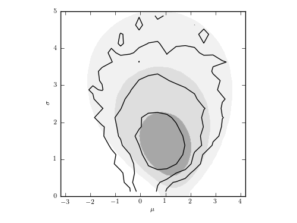

Gaussian Distribution with Gaussian Errors¶
Figure 5.25
The posterior pdf for mu and sigma for a Gaussian distribution with heteroscedastic errors. This is the same data set as used in figure 5.7, but here each measurement error is assumed unknown, treated as a model parameter with a scale-invariant prior, and marginalized over to obtain the distribution of mu and sigma shown by contours. For comparison, the posterior pdf from figure 5.7 is shown by shaded contours.
{kind=link}
[-- 7% ] 1842 of 25000 complete in 0.5 sec
[---- 12% ] 3085 of 25000 complete in 1.0 sec
[------- 18% ] 4701 of 25000 complete in 1.5 sec
[--------- 24% ] 6017 of 25000 complete in 2.0 sec
[----------- 29% ] 7426 of 25000 complete in 2.5 sec
[------------- 36% ] 9161 of 25000 complete in 3.0 sec
[---------------- 42% ] 10596 of 25000 complete in 3.5 sec
[-----------------49% ] 12291 of 25000 complete in 4.0 sec
[-----------------55%- ] 13933 of 25000 complete in 4.5 sec
[-----------------62%--- ] 15652 of 25000 complete in 5.0 sec
[-----------------69%------ ] 17312 of 25000 complete in 5.5 sec
[-----------------76%-------- ] 19065 of 25000 complete in 6.0 sec
[-----------------83%----------- ] 20764 of 25000 complete in 6.5 sec
[-----------------90%-------------- ] 22548 of 25000 complete in 7.0 sec
[-----------------96%---------------- ] 24246 of 25000 complete in 7.5 sec
[-----------------100%-----------------] 25000 of 25000 complete in 7.7 sec
# Author: Jake VanderPlas
# License: BSD
# The figure produced by this code is published in the textbook
# "Statistics, Data Mining, and Machine Learning in Astronomy" (2013)
# For more information, see http://astroML.github.com
# To report a bug or issue, use the following forum:
# https://groups.google.com/forum/#!forum/astroml-general
import numpy as np
from matplotlib import pyplot as plt
# Hack to fix import issue in older versions of pymc
import scipy
import scipy.misc
scipy.derivative = scipy.misc.derivative
import pymc
from astroML.plotting.mcmc import convert_to_stdev
from astroML.plotting import plot_mcmc
#----------------------------------------------------------------------
# This function adjusts matplotlib settings for a uniform feel in the textbook.
# Note that with usetex=True, fonts are rendered with LaTeX. This may
# result in an error if LaTeX is not installed on your system. In that case,
# you can set usetex to False.
from astroML.plotting import setup_text_plots
setup_text_plots(fontsize=8, usetex=True)
def gaussgauss_logL(xi, ei, mu, sigma):
"""Equation 5.22: gaussian likelihood"""
ndim = len(np.broadcast(sigma, mu).shape)
xi = xi.reshape(xi.shape + tuple(ndim * [1]))
ei = ei.reshape(ei.shape + tuple(ndim * [1]))
s2_e2 = sigma ** 2 + ei ** 2
return -0.5 * np.sum(np.log(s2_e2) + (xi - mu) ** 2 / s2_e2, 0)
#------------------------------------------------------------
# Select the data
np.random.seed(5)
mu_true = 1.
sigma_true = 1.
N = 10
ei = 3 * np.random.random(N)
xi = np.random.normal(mu_true, np.sqrt(sigma_true ** 2 + ei ** 2))
#----------------------------------------------------------------------
# Set up MCMC for our model parameters: (mu, sigma, ei)
mu = pymc.Uniform('mu', -10, 10, value=0)
log_sigma = pymc.Uniform('log_sigma', -10, 10, value=0)
log_error = pymc.Uniform('log_error', -10, 10, value=np.zeros(N))
@pymc.deterministic
def sigma(log_sigma=log_sigma):
return np.exp(log_sigma)
@pymc.deterministic
def error(log_error=log_error):
return np.exp(log_error)
def gaussgauss_like(x, mu, sigma, error):
"""likelihood of gaussian with gaussian errors"""
sig2 = sigma ** 2 + error ** 2
x_mu2 = (x - mu) ** 2
return -0.5 * np.sum(np.log(sig2) + x_mu2 / sig2)
GaussGauss = pymc.stochastic_from_dist('gaussgauss',
logp=gaussgauss_like,
dtype=np.float,
mv=True)
M = GaussGauss('M', mu, sigma, error, observed=True, value=xi)
model = dict(mu=mu, log_sigma=log_sigma, sigma=sigma,
log_error=log_error, error=error, M=M)
#------------------------------------------------------------
# perform the MCMC sampling
np.random.seed(0)
S = pymc.MCMC(model)
S.sample(iter=25000, burn=2000)
#------------------------------------------------------------
# Extract the MCMC traces
trace_mu = S.trace('mu')[:]
trace_sigma = S.trace('sigma')[:]
fig = plt.figure(figsize=(5, 3.75))
ax, = plot_mcmc([trace_mu, trace_sigma], fig=fig,
limits=[(-3.2, 4.2), (0, 5)],
bounds=(0.08, 0.12, 0.95, 0.95),
labels=(r'$\mu$', r'$\sigma$'),
levels=[0.683, 0.955, 0.997],
colors='k')
#----------------------------------------------------------------------
# Compute and plot likelihood with known ei for comparison
# (Same as fig_likelihood_gaussgauss)
sigma = np.linspace(0.01, 5, 41)
mu = np.linspace(-3.2, 4.2, 41)
logL = gaussgauss_logL(xi, ei, mu, sigma[:, np.newaxis])
logL -= logL.max()
im = ax.contourf(mu, sigma, convert_to_stdev(logL),
levels=(0, 0.683, 0.955, 0.997),
cmap=plt.cm.binary_r, alpha=0.5)
im.set_clim(0, 1.1)
ax.set_xlabel(r'$\mu$')
ax.set_ylabel(r'$\sigma$')
ax.set_xlim(-3.2, 4.2)
ax.set_ylim(0, 5)
ax.set_aspect(1. / ax.get_data_ratio())
plt.show()